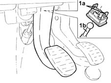
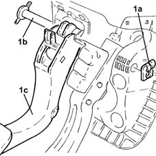

3330B26 clutch pedal - r+r
- Path
- Procedures > 33 BRAKING SYSTEM > 3330 HYDRAULIC BRAKING SYSTEM > 3330B pedal unit > 3330B26 clutch pedal - r+r
- Kind
- repair procedure (removal / refitting; the operation number is the code)
- Applies to
- all engines; all production periods
- Interactive page
- https://sloeber94.github.io/elrnDB-lYpsln/en/#/2429170
Applies to: all engines; all production periods
 Removing
Removing
 Refitting
RefittingProceed with removal 7040A30 Left instrument panel lower TRIM - R.R. .
Undo both bolts and remove the underfacia beam lower reinforcement.
Applies to: engines: 1.2 8v, 1.2 16v, 1.4 16v; all production periods
Proceed with removal 1056B78 SWITCH on CLUTCH PEDAL - R.R. .
Applies to: engines: 1.3 JTD; all production periods
Proceed with the removal 1060G42 clutch pedal switch - r r
Applies to: engines: 1.3 JTD; all production periods
1. Release the retaining clips (1a) and disengage the clutch master cylinder push rod (1b) from the pedal.

Applies to: engines: 1.3 JTD; all production periods
1. Remove the stop clip (1a), withdraw the pin (1b) and remove the clutch pedal (1c) with spring device.

Applies to: all engines; all production periods
Refitting
RemovingRefit in its seating the clutch pedal with spring device, then secure it with the pin and retaining clip.
Connect the clutch pedal by replacing in its seat and press the pedal fully down.
Applies to: engines: 1.3 JTD; all production periods
Proceed with refitting 1060G42 clutch pedal switch - r r .
Applies to: engines: 1.2 8v, 1.2 16v, 1.4 16v; all production periods
Proceed with refitting 1056B78 SWITCH on CLUTCH PEDAL - R.R. .
Applies to: engines: 1.2 8v, 1.2 16v, 1.4 16v; all production periods
Refit the underfacia beam lower reinforcement and tighten the bolts
Proceed with refitting 7040A30 Left instrument panel lower TRIM - R.R. .